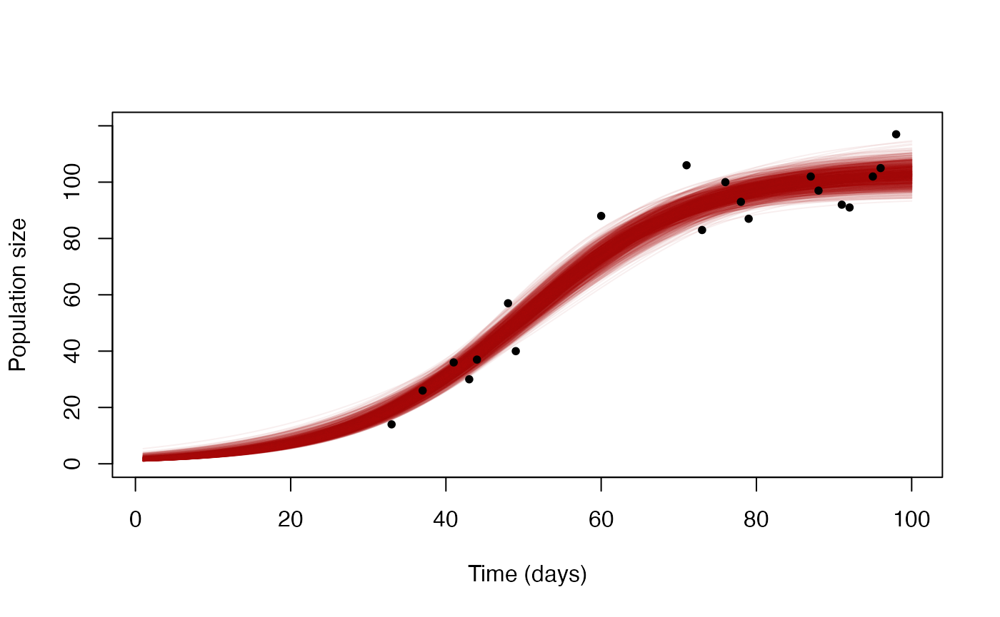

vignettes/getting_model_fits.Rmd
getting_model_fits.Rmd#> Registered S3 method overwritten by 'GGally':
#> method from
#> +.gg ggplot2Sometimes our likelihood function involves calculating a series of intermediate values. A good example is when we have a model that describes our fit to the data, which may be combined with an error term to capture random noise around this prediction. Once the MCMC has finished, we may want to extract this model fit so that we can see how good it really is. Having already written down the code for calculating the model fit once within the likelihood, we don’t want to have to write it down again when visualising results as this duplication of work is not only a waste of time but also can introduce errors.
This vignette demonstrates how intermediate values can be obtained from MCMC output using a single likelihood function.
For this example we will use some data on population growth and we will attempt to fit a simple curve through these points. The data can be loaded directly from within the drjacoby package, and takes the form of a simple data.frame of sampling times and population sizes:
# load example data
data("population_data")
head(population_data)
#> pop time
#> 1 14 33
#> 2 26 37
#> 3 36 41
#> 4 30 43
#> 5 37 44
#> 6 57 48
# plot points
plot(population_data$time, population_data$pop, ylim = c(0, 120), pch = 20,
xlab = "Time (days)", ylab = "Population size")For our model we will assume a discrete-time logistic growth model, in which the population starts at size \(N_0\) and grows at a rate \(r\) each timestep, but also experiences density-dependent death causing it to plateau out at a maximum population size \(N_{max}\). If we use \(N_t\) to denote the population size at time \(t\) then we can write this model as follows:
\[ \begin{align} N_{t+1} = rN_t(1 - N_t / K), \hspace{10mm} \mbox{where } K = N_{\mbox{max}}\left(\frac{r}{r-1}\right). \end{align} \]
There are three parameters in this model, and so our parameters dataframe should contain the three variables with suitable ranges as follows:
# define parameters dataframe
df_params <- define_params(name = "N_0", min = 1, max = 100,
name = "r", min = 1, max = 2,
name = "N_max", min = 50, max = 200)Within our likelihood function we need to calculate our expected population growth curve. This curve is perfectly smooth, but the real data is noisy so we will use a Poisson distribution to link the data to the model.
Crucially, when defining the likelihood function we will create an
option to return the model prediction, rather than the log-likelihood.
We use the misc input to the function to control whether
this option is active or not. If we set
misc$output_type = 1 then we will obtain the
log-likelihood, but if we set misc$output_type = 2 then we
will obtain the complete curve of model-predicted values:
# define log-likelihood function
loglike <- function(params, data, misc) {
# extract parameter values
N_0 <- params["N_0"]
r <- params["r"]
N_max <- params["N_max"]
# calculate expected population growth
K <- N_max * r / (r - 1)
x <- rep(0, 100)
x[1] <- N_0
for (i in 2:length(x)) {
x[i] <- r * x[i-1] * (1 - x[i-1] / K)
}
# option to return model prediction rather than log-likelihood
if (misc$output_type == 2) {
return(x)
}
# calculate log-likelihood
ret <- sum(dpois(data$pop, lambda = x[data$time], log = TRUE))
# return
return(ret)
}
# define R logprior function
logprior <- function(params, misc) {
dunif(params["N_0"], 1, 100, log = TRUE) +
dunif(params["r"], 1, 2, log = TRUE) +
dunif(params["N_max"], 50, 200, log = TRUE)
}When running the MCMC we want to make sure
misc$output_type = 1:
# run MCMC
mcmc <- run_mcmc(data = population_data,
df_params = df_params,
misc = list(output_type = 1),
loglike = loglike,
logprior = logprior,
burnin = 1e3,
samples = 1e4,
chains = 3,
pb_markdown = TRUE)
#> MCMC chain 1
#> burn-in
#> | |======================================================================| 100%
#> acceptance rate: 42.5%
#> sampling phase
#> | |======================================================================| 100%
#> acceptance rate: 43.9%
#> chain completed in 1.800967 seconds
#> MCMC chain 2
#> burn-in
#> | |======================================================================| 100%
#> acceptance rate: 43.1%
#> sampling phase
#> | |======================================================================| 100%
#> acceptance rate: 44%
#> chain completed in 1.669812 seconds
#> MCMC chain 3
#> burn-in
#> | |======================================================================| 100%
#> acceptance rate: 42.9%
#> sampling phase
#> | |======================================================================| 100%
#> acceptance rate: 44%
#> chain completed in 1.647409 seconds
#> total MCMC run-time: 5.12 secondsOnce we have MCMC output we should perform our usual checks to make
sure that everything has converged nicely (we will skip this step here
in the interest of time). Assuming everything is OK, we can move on to
exploring model fits. We will do this by running the same likelihood
function but with misc$output_type = 2, using the posterior
parameter draws as inputs. We may not want to use every posterior
parameter draw, in which case we can use the
sample_chains() function to sub-sample the output down as
needed:
# sample from posterior
param_draws <- sample_chains(mcmc, 1000)
# get matrix of model predictions
model_matrix <- apply(param_draws, 1, function(x) {
loglike(params = x, data = population_data, misc = list(output_type = 2))
})Plotting these against the data we can see that - reassuringly - the posterior model fits make a smooth curve through the data points:
matplot(model_matrix, type = 'l', lty = 1, col = "#99000010", ylim = c(0, 120),
xlab = "Time (days)", ylab = "Population size")
points(population_data$time, population_data$pop, pch = 20)
Notice that we only had to define the model fitting computation once
in this pipeline, as the same likelihood function was used for both
inference and obtaining the fit. There are more complicated versions of
this approach that may be useful in some settings, for example using
switch functions or multiple if statements to
allow for several different types of output from the likelihood
function, or even varying aspects of the core model such as the error
distribution using flags contained in misc.